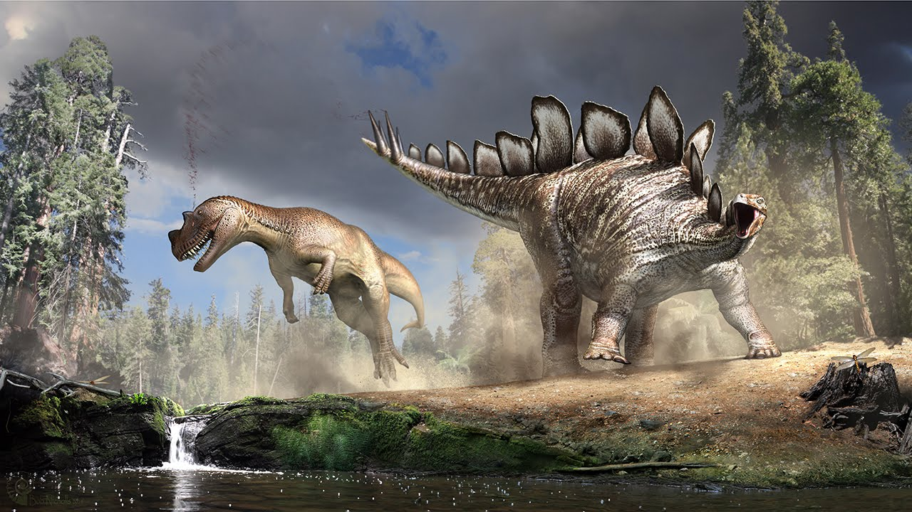

Stegosaurus
Khủng long vảy sừng kỷ Jura
Tổng quan
Kỷ
Jurassic
Họ
Stegosauridae
Chi
Stegosaurus
Dài
9 m
Cao
3 m
Nặng
4.5 tấn
Thức ăn

Stegosaurus là một chi khủng long phiến sừng thuộc cận bộ Stegosauria, sống từ kỷ Jura muộn. Do những đuôi nhọn và bọc giáp, Stegosaurus là một trong những khủng long dễ nhận ra nhất, cùng với Tyrannosaurus, Triceratops, và Diplodocus.
Nguồn: wikipedia.org
Phân bố
Khu vực miền Tây Bắc Mỹ, Tây Âu, miền nam Ấn Độ, Trung Quốc và Nam Phi

Thông tin thêm về Stegosaurus
Kỷ nguyên
Stegosaurus là một chi khủng long phiến sừng thuộc cận bộ Stegosauria, sống từ Jura muộn (giai đoạn Kimmeridgia đến tiền Tithonia), khoảng 155-145 triệu năm trước đây.
Phân bố
Stegosaurus là loài động vật sống trên cạn. Chúng sinh sống ở khu vực Châu Âu và Bắc Mỹ. Hóa thạch của loài khủng long Stegosaurus được phát hiện tại nhiều vùng gồm Bắc Mỹ, Tây Âu, miền nam Ấn Độ, Trung Quốc và Nam Phi.
Tên khoa học
Được đặt tên bởi nhà cổ sinh vật học Othniel Charles Marsh vào năm 1887. Stegosaurus - “thằn lằn mái nhà”, bắt nguồn từ tiếng Hy Lạp cổ στεγο- (stego-) có nghĩa "mái nhà" và σαυρος (-sauros) có nghĩa "thằn lằn", do ban đầu Marsh nghĩ rằng những phiến mỏng xếp thành dãy trên lưng loài vật này giống như những cái ván lợp trên mái nhà.
Kích thước
Stegosaurus có kích thước gần bằng một chiếc xe buýt, chúng thường phát triển đến chiều dài khoảng 6,5 - 9 mét (30 ft), cao khoảng 3 mét và có trọng lượng khoảng 3 - 5 tấn.

Ngoại hình
Stegosaurus có thể dễ dàng được nhận ra nhờ hai hàng mảng xương lớn hình tam giác chạy dọc theo chiều dài cột sống từ đầu đến chóp đuôi (thường được gọi là vảy) và chiếc đuôi nhọn.

Nó có một cái đầu hẹp, thuôn nhọn và hai chân trước ngắn hơn đáng kể so với hai chân sau. Nó di chuyển với hai chân sau duỗi thẳng hơn và đuôi giơ cao trong không trung.
Chế độ ăn
Stegosaurus có thể trông khá đáng sợ với chiếc đuôi nhọn và những chiếc đĩa lớn, sắc nhọn trang trí trên lưng. Tuy nhiên, những con khủng long này là một trong những loài ăn thực vật lớn, có răng nhỏ và má có cấu trúc đặc biệt có thể tiêu hóa thức ăn trước khi nó trôi vào dạ dày.
Những con thú ăn cỏ này phải ăn một lượng lớn thực vật chỉ để cung cấp đủ năng lượng cho chúng đi lại, vì vậy chúng không thể phân biệt quá nhiều về loại thực vật mà chúng ăn.
Khám phá
Stegosaurus là Hóa thạch chính thức của Bang Colorado. Mặc dù hóa thạch đầu tiên được tìm thấy ở bắc Morrison, Colorado vào những năm 1800, nhưng mãi đến năm 1982, nó mới trở thành hóa thạch chính thức của bang!
Tổng cộng, có ba loài Stegosaurus khác nhau mà chúng ta biết được là S. Armatus, S. stenops và S. Longispinus từ các hóa thạch được phát hiện ở Colorado.
Sự thật thú vị
Mặc dù có kích thước khổng lồ như vậy, nhưng não của loài khủng long Stegosaurus rất nhỏ, chỉ to bằng một quả óc chó, tương đương với bộ não của một con chó. Vì vậy loài khủng long Stegosaurus được xếp vào loài có tỷ lệ não tương quan với tỷ lệ cơ thể thấp nhất.

Tại một số thời điểm, một số Stegosaurus "thông minh" đã ăn những viên đá sẽ nảy trong bụng và giúp chia nhỏ bữa ăn của chúng hơn nữa và tống chúng ra ngoài sau khi ăn xong. Những viên đá này, được gọi là đá dạ dày, thường được sử dụng bởi nhiều loài khủng long ăn cỏ và thậm chí còn được tìm thấy ở một số sinh vật hiện đại ngày nay, chẳng hạn như gà !

Những chiếc đĩa cắm trên lưng Stegosaurus đã gây ra nhiều cuộc tranh luận về chức năng của chúng. Mặc dù ban đầu chúng được cho là có tác dụng bảo vệ bọc thép cho lưng của sinh vật, nhưng một số giả thuyết thay thế gần đây đã được đề xuất là những chiếc vảy trên lưng chi để trưng bày và uy hiếp kẻ thù chứ không có bất kỳ sự bảo vệ tốt nào cho cơ thể. Hoặc có thể dùng để điều chỉnh thân nhiệt của chúng.
